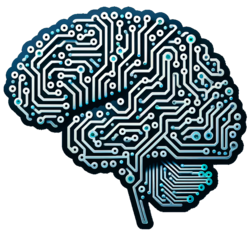

From Wikipedia, the free encyclopedia
"AI" redirects here. For other uses, see AI (disambiguation) and Artificial intelligence (disambiguation).

Artificial intelligence (AI) is the capability of computational systems to perform tasks typically associated
with human intelligence, such as learning, reasoning, problem-solving, perception, and decision-making.
It is a field of research in computer science that develops and studies methods and software that enable
machines to perceive their environment and use learning and intelligence to take actions that maximize their
chances of achieving defined goals.
High-profile applications of AI include advanced web search engines (e.g., Google Search); recommendation
systems (used by YouTube, Amazon, and Netflix); virtual assistants (e.g., Google Assistant, Siri, and Alexa);
autonomous vehicles (e.g., Waymo); generative and creative tools (e.g., language models and AI art); and superhuman
play and analysis in strategy games (e.g., chess and Go).
Various subfields of AI research are centered around particular goals and the use of particular tools. The traditional
goals of AI research include learning, reasoning, knowledge representation, planning, natural language processing,
perception, and support for robotics.
Artificial intelligence was founded as an academic discipline in 1956,[6] and the field went through multiple cycles of
optimism throughout its history,followed by periods of disappointment and loss of funding, known as AI winters.
Funding and interest vastly increased after 2012 when graphics processing units started being used to accelerate neural
networks and deep learning outperformed previous AI techniques.[11] This growth accelerated further after 2017 with the
transformer architecture.